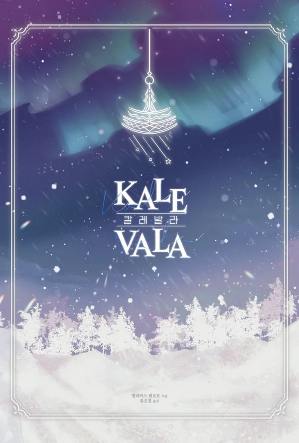

칼레발라
핀란드 겨레의 신화
Kalevala: Suomalaisia Kansanrunoja
- 발행일
- 2025년 5월 31일
- 지은이
- 엘리아스 뢴로트
- 옮긴이
- 류은결
- ISBN
- 979-11-989037-9-2 (05890)
- 정가
- 20,900원
소개
학식이 지배하고 노래로 결투하는 차가운 북방.
토르의 망치가 아닌, 우코의 도끼가 다스리는 이야기.
핀란드 문화의 상징, 민족 대서사시 «칼레발라»
22,795행 전문을 최초로 운문 완역했어요.
400개 이상의 주석과 인명·지명 해설로
세상을 즐기는 해상도를 업그레이드하세요 ♪
목차
I.세상의 창조와 최초의 인간
- 서장
- 1.일마타르의 창세
- 2.베이네뫼이넨의 파종과 신의 나무
II.노현자 베이네뫼이넨의 구혼
- 3.요우카하이넨의 만용
- 4.아이노의 비탄
- 5.슬픔 어린 낚시
- 6.공허한 복수
- 7.북방의 군주 로우히
- 8.포흐욜라의 딸
- 9.쇠의 기원과 치유의 송가
- 10.화수분 삼포의 탄생
III.망나니 미청년 렘밍케이넨
- 11.렘밍케이넨의 결혼
- 12.피의 머리빗과 저주의 길
- 13.히시의 큰사슴
- 14.투오넬라의 백조
- 15.영걸의 소생
IV.대장장이 일마리넨의 결혼식
- 16.잃어버린 루오테
- 17.비푸넨의 환상 노래
- 18.두 사내의 구혼
- 19.일마리넨의 과업과 약혼
- 20.황소 도축과 술의 기원
- 21.손님 맞이와 축성의 노래
- 22.신부의 비탄
- 23.현명한 오스모타르의 가르침
- 24.남편의 도리와 신부의 작별
- 25.신랑의 귀향
V.렘밍케이넨의 어리석은 모험
- 26.포흐욜라의 관문과 뱀의 길
- 27.불청객의 난동과 요술 대결
- 28.외로운 섬으로
- 29.섬의 소녀들
- 30.매서운 서리와 쓰라린 좌절
VI.쿨레르보의 불행한 삶과 죽음
- 31.쿨레르보의 수난
- 32.목축의 노래
- 33.사무친 원한과 잔혹한 살인
- 34.방랑과 재회
- 35.사악한 충동과 후회
- 36.쿨레르보의 최후
VII.남방의 영걸들과 삼포 도적
- 37.황금 신부
- 38.그릇된 광기
- 39.세 영걸의 원정
- 40.강꼬치와 칸텔레
- 41.노인의 탄주와 눈물의 보석
- 42.삼포 도둑과 추격하는 풍랑
- 43.삼포의 분열
- 44.새로운 칸텔레
VIII.북방의 군주 로우히의 격노
- 45.로비아타르의 아홉 병마
- 46.곰의 장례식
- 47.사로잡힌 해와 달
- 48.불덩이 낚시와 포획
- 49.돌아온 광명
IX.환상 시대의 종말
- 50.마르야타의 아들
- 종장
부록: 인명·지명 등 일람
미리보기 주석은 본서에서 만나보실 수 있습니다.
제31장 쿨레르보의 수난
Yhdesneljättä Runo
싸움을 좋아하는 사내 운타모는 형 칼레르보와 사소한 계기로 다투다가 결국 큰 전쟁을 일으킨다. 운타모는 칼레르보의 식구를 몰살하고 임신한 그의 아내만을 살려 둔다.
잡혀가 종살이를 하던 부인에게서 아들 쿨레르보가 태어난다. 쿨레르보가 요람에서 운타모에게 복수를 결심하자 운타모가 그를 죽이려 하지만, 선천적인 괴력과 마법의 재능을 타고난 그를 죽이는 데에 실패한다.
운타모는 쿨레르보를 종으로 부리지만 쿨레르보는 모든 일을 망친다. 화가 난 운타모는 쿨레르보를 일마리넨에게 노비로 팔아 버린다.
옛날 옛적 어떤 집의 어머니가
수많은 닭과 백조를 키웠다네
닭들은 울타리에 놓아 먹이고
백조는 강으로 보내 길렀다네.
독수리가 날아와서 흩어지고
송골매가 날아와서 흩어지고
맹금들이 날아와서 흩어지니
첫째는 카르얄라로 휘말리고
둘째는 베네예로 떠나 버리고
셋째는 집에다 남겨 두었도다.
새가 베네예로 데려간 아이는
그 땅에서 장사꾼이 되었으며
새가 카르얄라로 데려간 아이
거기서 자라 칼레르보가 되고
새가 집안에다 남겨 둔 아이는
자라서 운타모이넨이라 하니
아버지의 마음에 불행이 되고
어머니의 가슴에 슬픔이 되네.
운타모이넨이 그물을 던져서
칼레르보의 호수에 놓았도다.
그러자 칼레르보가 이를 보고
그물에 걸린 물고기를 취하니
성질 다급하고 사나운 운타모
크게 분노하여 길길이 날뛰네.
손가락으로 전쟁을 일으키고
손바닥으로 싸움을 일으키고
사람들 사이에 다툼을 만들고
물고기 사이에 분쟁을 빚노라.
형제는 다투고 매일 싸웠으나
서로가 서로를 이기지 못하니
서로가 서로의 몸을 찌르거든
그 칼날이 자신에게 돌아오네.
하루가 지나고 이틀이 지나고
사흘을 연달아 싸우고 싸우다
칼레르보가 운타모의 집 뒤에
귀리 씨앗을 뿌려서 심었노라.
운타모의 과감한 양이 나와서
칼레르보의 귀리를 주워 먹고
칼레르보의 사나운 개가 와서
운타모의 암양을 물어뜯더라.
운타모가 또 다시 크게 노하여
그의 형 칼레르보를 위협하고
칼레르보의 식구를 쳐 죽이고
큰 사람도 치고 작은 자도 치고
온 백성을 베고 찌르고 해하고
집을 잿더미로 만들려 하노라.
사내들에게 장검을 차게 하고
호걸들에게 무기를 쥐게 하고
소년들에게 장창을 들게 하고
청년들에게 낫을 메게 하나니
그렇게 수많은 군세를 이끌고
그의 형을 치려고 나아가노라.
칼레르보의 아름다운 부인이
창가에 앉아서 쉬고 있었노라.
문득 창밖을 내다본 작은 여인
깜짝 놀라서 서둘러 외치기를
“저 밭 끝자락에서 일어나는 것
새 골목 바깥에서 솟아나는 것
굴뚝에서 이는 짙은 연기인가
어둡게 드리운 검은 구름인가?”
어둡게 드리운 구름도 아니며
굴뚝에서 이는 연기도 아니니
이는 운타모가 이끄는 무리라
전쟁하러 오는 사내의 무리라.
운타모가 이끄는 무리가 와서
허리에 찬 검을 일제히 뽑으니
칼레르보의 식구를 쳐 죽이고
커다란 혈족을 파멸하게 하고
집을 불태워 잿더미로 만들고
대지에 아무것도 남기지 않네.
칼레르보의 여인 혼자 남았네
태내에 커다란 고통을 안고서.
운타모의 사내들이 그를 잡고
그들의 저택으로 끌고 가서는
방구석을 쓰는 노예로 부리고
마루를 닦는 종으로 부리노라.
세월이 조금 흐르고 흐르나니
태내에서 소년이 태어나노라
더없이 불행한 어머니에게서.
그 아이의 이름 무어라 하리오?
어머니는 쿨레르보라 부르고
운타모는 전사라고 부르더라.
작은 사내아이 고이 눕혀지고
아버지 잃은 아이 고이 잠드네
살랑살랑 흔들리는 요람 위에
달랑달랑 흔들리는 침대 위에.
요람에 누워서 흔들리는 아이
머리카락 바람에 살랑이노라.
하루를 흔들고 이틀을 흔들고
사흗날을 요람에서 흔들리니
갓난아기의 우악스런 발길질
허공을 있는 힘껏 걷어차더니
아기를 휘감은 포대기를 끊고
이불 밖으로 뛰쳐나와 걸으며
박달나무 요람을 때려 부수고
알록달록 이불을 찢어 발기네.
힘세고 좋은 아이가 되겠구나
건장한 사내로 자라나겠구나!
운타모 집안의 사람들이 모여
형의 집에서 빼앗은 어린아이
우람하고 강한 사나이로 자라
기운차고 힘센 대장부로 자라
일백 명의 노예처럼 노역하고
일천 명처럼 일하길 바라노라.
한 달을 자라고 두 달을 자라고
세 달을 자라날 무렵이 되더니
소년은 황소의 무릎만큼 자라
생각하고 사색하기 시작하네.
“내가 더욱 커지고 자라나거든
몸이 더욱 튼튼히 장성하거든
아버지의 원수를 되갚으리라
어머니의 눈물에 복수하리라!”
운타모가 조카의 결심을 듣고
두려움에 질려 나직이 가로되
“이 아이가 우리를 죽이겠구나
칼레르보가 다시 태어났구나!”
사내들이 모여 깊이 생각하고
여인들이 모여 오래 궁리하네
“이 아이를 어디에 버려 두리오
이 아이를 어찌 죽여야 하리오?”
그들이 아이를 번쩍 안아들고
술통에 밀어넣고 뚜껑을 닫고
그것을 널따란 물에 가져다가
파도 위에 띄워서 내보내노라.
이틀 밤이 지나고 사흘이 가고
호수로 나아가서 살피는도다
물에 빠져서 죽음을 맞았는지
술통 속의 아이가 죽었는지를.
호수에 빠져서 죽지 않았도다
술통의 어린아이 살아 있도다!
아이는 술통에서 빠져나와서
파도 위를 유유히 떠다니면서
구리 낚싯대를 손에 움켜쥐고
비단 낚싯줄을 뒤로 드리우고
호수에 사는 물고기를 낚으며
얼마나 깊은지를 재고 있더라.
호수에 남은 물이 거의 없도다
국자로 두 번이면 다 퍼질 만큼.
마지막 방울까지 긁어 모아도
국자로 세 번이면 다 담을 만큼.
두려운 운타모 깊이 고민하길
“이 아이를 어디에 버려 두리오
이 아이를 어찌 멸하게 하리오
이 아이를 어찌 죽여야 하리오?”
그리하여 그가 종에게 시키네
단단한 통나무를 자작나무를
잎사귀 무성한 높은 전나무를
송진이 줄줄 흐르는 소나무를
작은 어린아이를 불태울 만큼
쿨레르보를 없앨 만큼 모으라.
종들이 나아가 나무를 모으네
단단한 통나무를 자작나무를
잎사귀 무성한 높은 전나무를
송진이 줄줄 흐르는 소나무를.
나무 껍질을 일천 썰매에 싣고
일백 길 느릅나무도 베어 오니
나무 무더기에 잔불을 지르고
장작 무더기에 불씨를 붙이고
그 위에 어린아이를 던지노라
맹렬히 타오르는 불 한가운데.
하루가 불타고 이틀이 불타고
사흗날도 불은 꺼지지 않거늘
사람들이 나아가 들여다보니
아이는 잿더미 사이에 앉아서
불씨 한가운데 팔꿈치를 넣고
자그마한 집게를 손에 쥐고서
잉걸불을 뒤적뒤적 헤집으며
숯불을 주섬주섬 그러모으네.
머리카락 하나 타지 않았도다
곱슬머리 여전히 찰랑하도다!
두려운 운타모 깊이 고민하길
“이 아이를 어디에 버려 두리오
이 아이를 어찌 멸하게 하리오
이 아이를 어찌 죽여야 하리오?”
그리하여 숲 한가운데 나아가
아이를 참나무에 매달아 두네.
이틀이 지나고 사흘이 지나고
밤과 낮이 돌고 돌아 흐르노라.
그리고 운타모가 읊조리기를
“이제 나가서 살펴보아야겠다
쿨레르보가 죽음을 맞았는지
나무에 매달려 끝을 맞았는지.”
하인을 보내어 보게 하였더니
머지않아 돌아온 하인 가로되
“쿨레르보는 죽지 않았나이다
나무에 달려 죽지 않았나이다!
아이는 자그만 송곳을 들고서
나무에 그림을 그리고 있나니
온 나무가 그림으로 가득하고
참나무에 글이 가득하더이다.
사람을 그리고 칼날을 그리고
날카로운 장창을 그렸더이다.”
운타모가 아이를 어찌하리오
독을 품은 아이를 어찌하리오!
어떻게 죽음으로 내몰려 해도
어떻게 파멸을 떠안기려 해도
수르마의 아가리에 아니 닿고
죽음에 잡아먹히지도 않나니.
그리하여 죽이기를 그만두고
어린아이 해치기를 그만두고
쿨레르보를 마지못해 키워서
운타모 집안의 노예로 삼노라.
운타모가 노예 아이를 불러서
눈앞에 앉혀 두고 훈계하기를
“네가 곱게 어여쁘게 지내거든
사고 아니 치고 얌전히 살거든
나의 집에 머무르게 허락하마
시종으로 일하며 살게끔 하마
일한 만큼은 보상을 내어 주고
수고에 따라 품삯을 매겨 주마.
곱게 치장할 허리띠를 주거나
귓전을 때릴 손찌검을 주리라.”
그렇게 불행한 소년 쿨레르보
한 뼘쯤 키가 자랐을 무렵부터
온갖 궂은 일을 도맡게끔 하고
어른들의 일을 거들게끔 하고
작은 어린이를 돌보게끔 하고
작은 손가락을 보살피게 하네.
“아기를 잘 지키고 보살피거라
아기를 잘 먹이고 너도 먹어라!
더러운 천은 냇물에 빨래하고
자그만 옷은 깨끗이 씻을지라!”
하루를 돌보고 이틀을 지키다
손가락을 꺾고 눈을 파내노라.
그리하여 아이를 돌본 사흗날
어린 아기는 병들어 죽게 하고
더러운 천은 냇물에 내던지고
작은 요람은 불에 태워 버리네.
두려운 운타모 깊이 고민하길
“작은 어린아이를 돌보는 일은
작은 손가락을 보살피는 일은
그놈에게 아니 어울리는구나!
모르겠구나 어디 두어야 할지
모르겠구나 무얼 시켜야 할지
나무를 베어서 불태우게 할까?”
그리하여 나무를 베게 하노라.
칼레르보의 후계자 쿨레르보
주인이 시킨 일을 듣고 가로되
“이제 사나이가 될 수 있겠구나!
도끼를 손 안에 움켜쥐고 나면
보는 것마다 더욱 사랑스럽고
듣는 것마다 더욱 행복하리라.
나는 다섯 배 힘센 영웅이 되고
여섯 배나 용감한 호걸이 되리.”
신나는 마음을 끌어안은 소년
대장간에 가서 장인을 부르네.
“오오 친애하는 대장장이 형님!
작은 도끼를 두들겨 주시구려!
사내에게 걸맞은 도끼를 주오
일꾼에게 걸맞은 쇠 날붙이를!
숲의 나무를 베러 가야 한다오
가는 자작나무를 패야 한다오.”
대장장이가 무쇠를 두드려서
알맞은 도끼를 만들어 내나니
사내에게 걸맞은 도끼를 주고
일꾼에게 걸맞은 날을 주노라.
칼레르보의 후계자 쿨레르보
소중한 도끼의 날을 세우나니
하루 온종일 도끼를 벅벅 갈고
한밤중 내내 자루를 깎는도다.
숲의 나무를 베러 길을 떠나네
수풀이 무성한 높은 산등성이
가장 좋은 나무가 자라는 데로
굵은 통나무가 무성한 곳으로.
도끼로 힘껏 나무를 내려치고
날카로운 날로 영차 찍어내니
좋은 나무는 한 번에 넘어가고
나쁜 나무는 반만에 넘어가네.
힘껏 휘둘러 다섯 그루를 베고
열심히 찍어 여덟 그루를 베고
머지않아 싫증나 격노한 소년
일을 내팽개치고 소리치노라.
“렘포나 이딴 일을 하게 시켜라!
히시나 죽어라 일하게 두어라!”
그루터기에 도끼를 던져 꽂고
가슴을 치고 크게 소리 지르고
휘파람을 불고 노래를 하나니
배운 적도 없는 저주의 노래라.
“푸른 숲이여 쓰러지고 베여라
자작나무여 넘어지고 잘려라
내 노래가 들리는 모든 곳에서
내 휘파람이 닿는 모든 곳에서!
세상이 멸망하지 않고 있는 한
황금빛 달이 찬란히 빛나는 한
이 칼레르보의 아들의 숲에서
훌륭한 사내가 일하는 밭에서
새싹은 틔워서 자라나지 말라
줄기는 자라서 굵어지지 말라!
대지에 새싹에 떨어져 심겨도
자그만 새싹이 머리를 들어도
가녀린 줄기가 하늘로 뻗어도
가느다란 가지가 위로 솟아도
이삭은 결코 맺히지 말지어다
열매는 결코 열리지 말지어다!”
성질 다급하고 사나운 운타모
칼레르보의 아들 쿨레르보가
집안에 새로 받아들인 노비가
숲을 잘 베었는지 보러 왔노라.
그러나 숲은 엉망이 되었으며
소년은 일을 완전히 그르쳤네.
운타모가 이를 보고 생각하길
“이 일은 그놈에게 맞지 않구나!
가장 좋은 목재를 모두 망치고
가장 좋은 숲을 못쓰게 하다니.
모르겠구나 어디 두어야 할지
모르겠구나 무얼 시켜야 할지
울타리를 만들게 하여야 하나?”
그리하여 울타리를 짓게 하네.
칼레르보의 후계자 쿨레르보
울타리를 만들기 시작하노라.
커다란 소나무를 베어 가져다
울타리 기둥으로 곧게 세우고
드높은 전나무를 베어 가져다
수직으로 꽂아 말뚝으로 삼네.
가장 길쭉한 마가목을 가져다
가지와 가지를 단단히 엮으니
울타리에 빈틈이 조금도 없고
사람이 드나들 문짝도 없도다.
소년이 만든 이상한 울타리를
스스로 바라보며 노래하기를
“하늘의 새처럼 날지 못하는 자
한 쌍의 날개로 날지 못하는 자
칼레르보의 아들이 지은 담을
결코 감히 넘나들지 못하리라!”
성질 다급하고 사나운 운타모
칼레르보의 아들 쿨레르보가
전쟁으로 붙잡은 어린 포로가
담을 잘 지었는지 보러 왔노라.
울타리에 빈틈이 조금도 없고
사람이 드나들 문짝도 없으며
땅에서 하늘까지 모두 가리고
드높이 솟구쳐 구름을 찌르네.
운타모가 이를 보고 탄식하길
“이 일도 그놈에게 맞지 않구나!
울타리에 빈틈이 조금도 없고
사람이 드나들 문짝도 없으며
땅에서 하늘까지 모두 가리고
드높이 솟구쳐 구름을 찌르니
사람이 넘나들 방도가 없으며
드나들 구멍 하나조차 없구나!
모르겠구나 어디 두어야 할지
모르겠구나 무얼 시켜야 할지
호밀 타작을 하게 하여야 하나?”
그리하여 호밀 타작을 시키네.
칼레르보의 후계자 쿨레르보
호밀 이삭을 쳐서 타작하거늘
호밀을 깨부수어 겨로 만들고
이삭은 박살나 쭉정이가 되네.
조카를 붙잡은 사나운 집주인
타작마당에 찾아와 직접 보네
칼레르보의 아들이 잘 하는지
쿨레르보의 솜씨가 좋은지를.
호밀은 부서져 겨가 되었으며
이삭은 깨져 쭉정이가 되었네!
운타모가 이를 보고 탄식하길
“이놈은 어디에도 쓸모없구나!
무슨 일을 해내라고 시키든지
일을 그르치고 망치기만 하네.
베네예 땅으로 보내 버리든지
카르얄라로 되팔아 버리든지
대장장이 일마리넨에게 팔아
장인의 종살이를 시켜야겠다.”
그리하여 칼레르보의 아들을
카르얄라 땅에 팔아 넘기노라
이름 높은 장인 일마리넨에게
솜씨 좋은 장인에게 넘기노라.
대장장이가 무엇을 주었는가?
몸값으로 준 것 참으로 값지니
밑바닥이 다 닳은 얇은 냄비 둘
부러지기 직전이 된 갈고리 셋
이가 나가서 쓸모없는 낫 다섯
자루 부러져 버리는 괭이 여섯
이것이 쓸모없는 노비의 몸값
칼레르보의 아들의 값이로다.